Research Projects

Earables for PCG Recovery
We leverage physics-informed neural networks to recover PCG from in-ear sounds. We also find that PCG signals contain blood pressure information.
Project Page →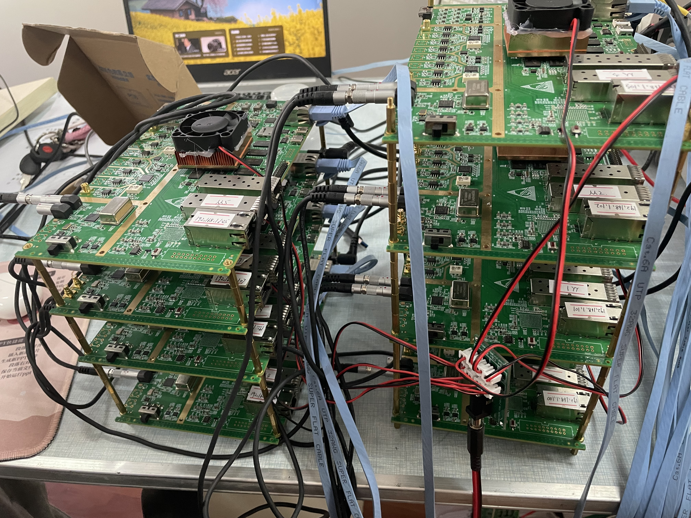
High-Speed Multi-Channel Data Acquisition System
We build a 64-channel 100 MS/s data acquisition platform. It can be chained together for PET readout electronics, ultrasonic sensing, and other spatial sampling applications.
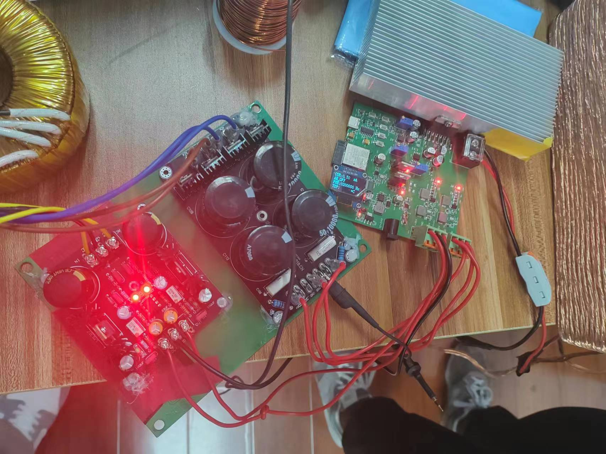
Wireless Powered Passive Temperature Tag
We build a wireless powered temperature tag with high precision. The tag harvests energy from magnetic resonance, communicates up to 50 cm, and is waterproof.
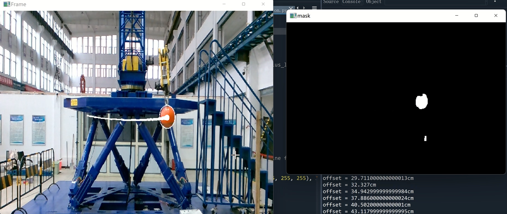
Computer Vision Based Crane Stabilization System
We use computer vision to track cargo on a crane and emulate an unstable board at sea. The support point can move to reduce cargo motion relative to the ground.
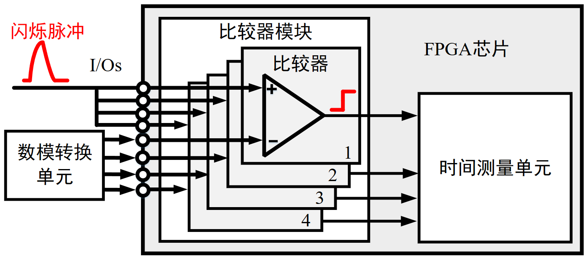
REMVT: Resource-Efficient Energy Characterization
REMVT improves conventional MVT by reducing logic resources and increasing energy characterization resolution.
Project Page →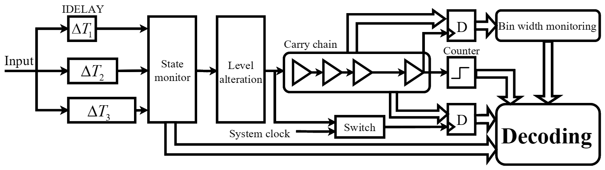
TwinPop: FPGA-Based Time-to-Digital Converter
TwinPop uses fewer chain resources than conventional tapped delay line TDC designs while keeping low dead time and improving resilience to temperature fluctuations.
Project Page →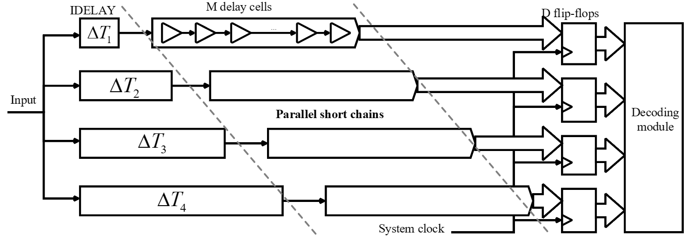
ParCha: Parallel Short-Chain TDC
ParCha folds a long delay chain into several short parallel pieces to reduce delay-cell heterogeneity and calibration effort.
Project Page →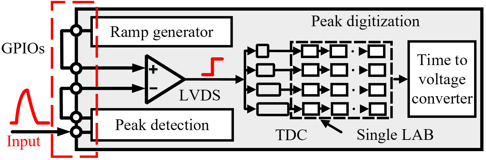
Analog Peak Detection Using FPGA Solutions
We design a compact, flexible, and resource-efficient analog peak detection circuit using FPGA-only solutions.
Project Page →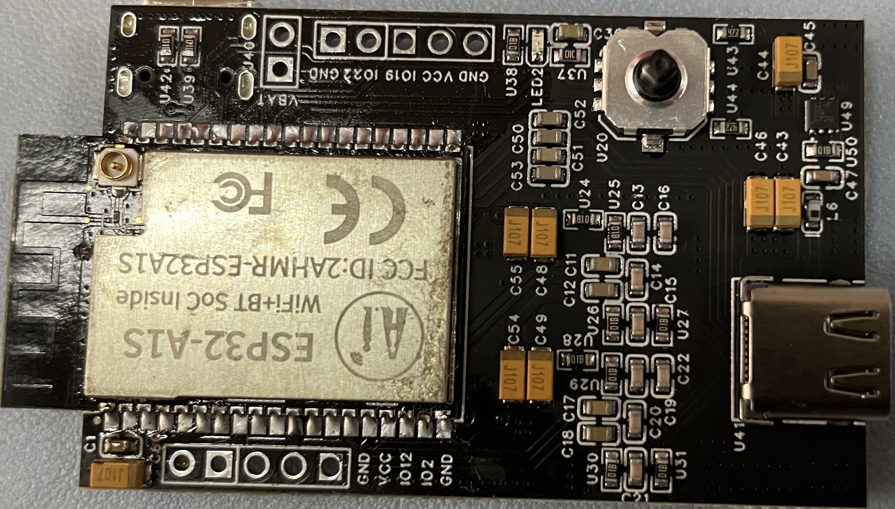
EarAce: Earable Acoustic Sensing Platform
EarAce handles hardware heterogeneity and provides flexible control of audio facilities for in-ear acoustic sensing.
Project Page →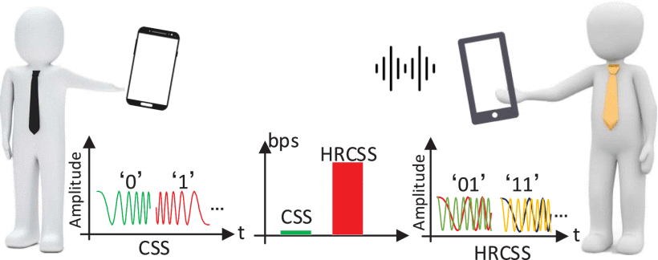
HRCSS: Aerial Acoustic Communication
HRCSS uses a loose orthogonality condition to overlap multiple chirp carriers and improve data rate under dynamic channel conditions.
Project Page →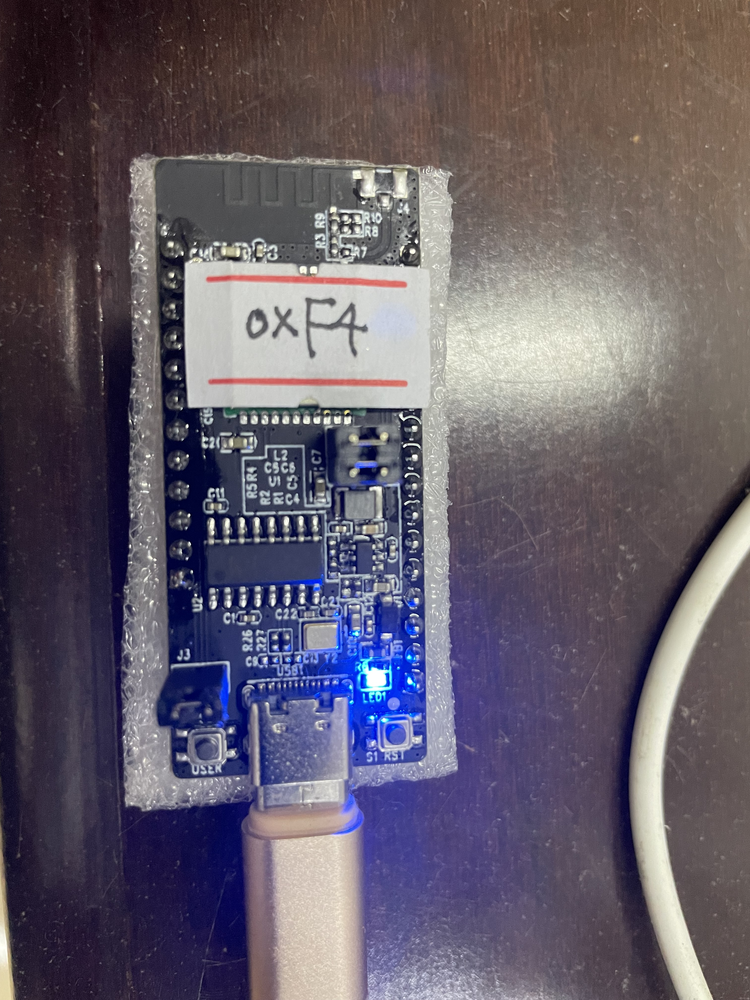
WiFi Sensing on IoT Devices
We design a WiFi sensing platform based on the Hi3861 IoT chipset and HUAWEI Harmony OS.
Project Page →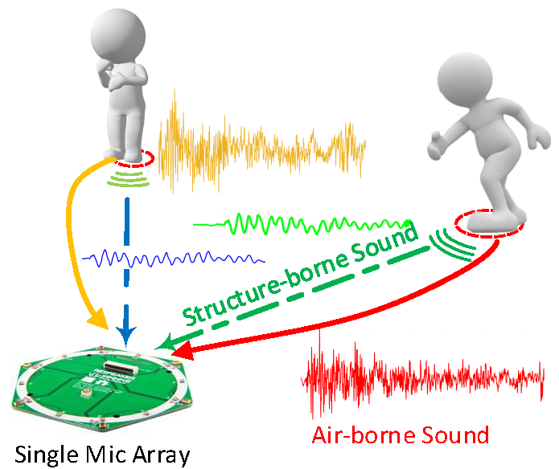
PACE: Passive Acoustic Localization
We design a passive acoustic localization and tracking system for multiple walking persons.
Project Page →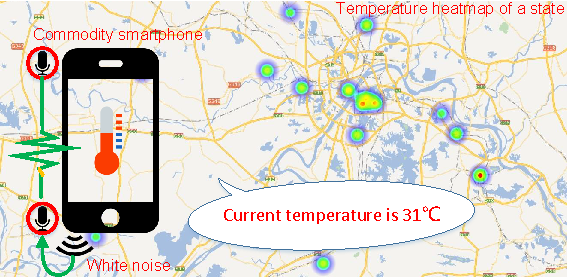
AcuTe: Acoustic Thermometer
We design an algorithm that enables a single smartphone to sense ambient temperature.
Project Page →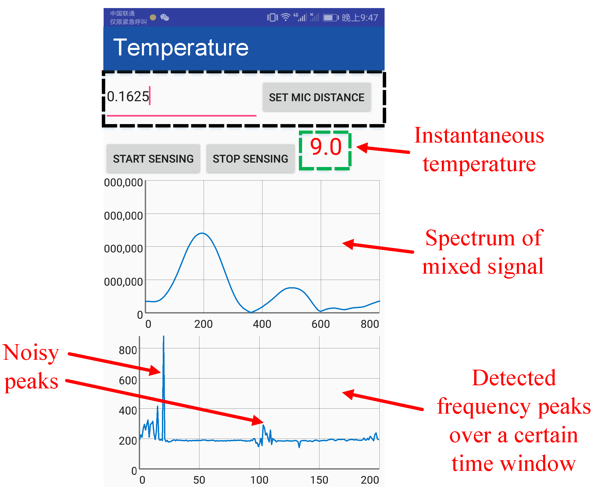
SST: Software Sonic Thermometer
Our algorithm uses the relationship between sound propagation speed and temperature for ambient temperature sensing.
Project Page →
ASDP: Acoustic Software Defined Platform
We design a general benchmarking platform for acoustic communication and sensing.
Project Page →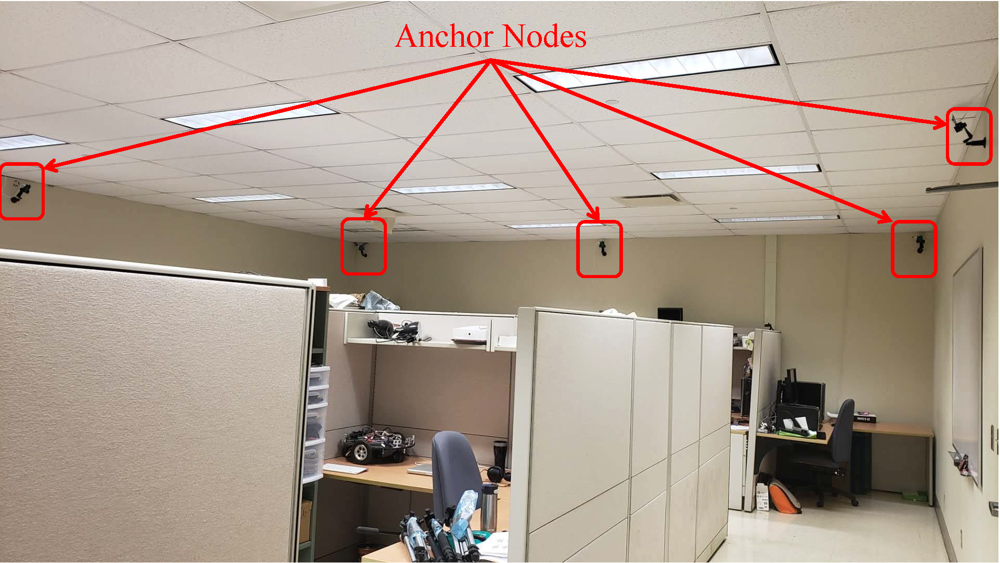
AALTS: Acoustic Indoor Localization
We design an asynchronous acoustic indoor localization system for target localization and tracking.
Project Page →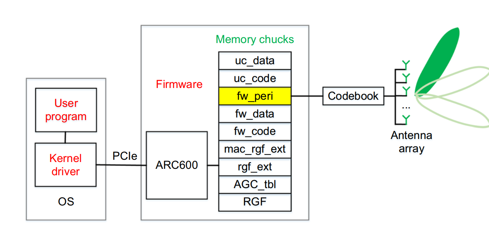
HackMan: Millimeter-Wave Measurement Study
We design an online tool for tuning antenna coefficients on commodity millimeter-wave hardware.

MotionBeep: Acoustic Fitness Game
MotionBeep enables precise long-distance ranging even in the presence of severe Doppler effects.
Project Page →